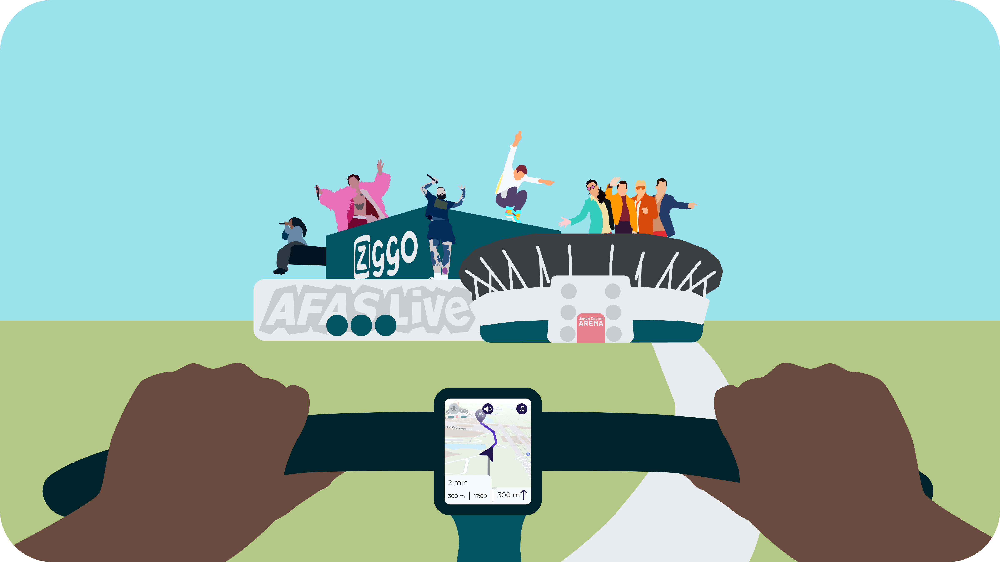

Rythm Ritje
graduation project
The assignment
The ArenAPoort area in the South-East of Amsterdam houses three large event venues. It experiences extremely high traffic levels during peak periods just before and after events. On occasions when three events concur, more than 150,000 people commute to and from the area, with over half of the visitors travel by car. This results into a significant increase in emissions. Many visitors choose to use cars either out of habit or due to lack of alternative options. Traffic congestion is the downside for visitors traveling by car, as their motto is "the faster the travel, the better." This is where Rythm Ritje comes into play for concertgoers.
My role and cooperation
My role
The project has been my graduation project, so I have completed the entire project independently. For that reason, I have gathered a lot of feedback from stakeholders. I discussed the problem with event attendees, event venues, event employees, local residents, travelers passing by the ArenA but not attending the event, emergency responders, and an artist. This way, I could comprehensively understand the problem.
Cooperation
During the graduation project, I collaborated with other students, event venue staff, residents of the ArenA-Poort area, and, of course, event attendees. Event attendees have been the most involved in the process because they are the target audience, and the change comes from them. I kept these people close through regular meetings, updates and interviews.
Final result
The time was up and I came up with Rythm Ritje. With this product visitors park farther away from the venue and bike from the parking lot to the concert. This reduces the amount of time visitors spend in traffic. The route you take depends on where you're coming from, allowing you to travel most efficiently and avoid traffic.
Screens per phase
To support the concept, I made a prototype for an app where the visistors can arrange all the needed steps to use Rythm Ritje. The app is also to look forward to going to the concert. Fun and inspiration are key for a succesful concert, as much as it is for a succesful app.
If you're on mobile: You can scroll right to see all the screens. All the screens are showcased under this text.
In the app, visitors can manage their parking ticket, reserve bicycles, and prepare for the concert. As preparation, you can listen to music from the artist you're going to see and get outfit inspiration. On the day of the event, the visitor receives the route from home to the parking lot. Once you arrive, you can unlock the bicycles using the app. The bikes have the route to the event ready on the device attached to the bike. While cycling, you can listen to music from the artist you're going to see along with your concert buddy. You don't need to use your phone while cycling because there's a special device on the bike that shows the route and allows you to control the music. After the concert, you'll be guided back to your car.
Product video
To show how the app and how it's used, I made a Dutch narrated video. The video shows the app screens.
Process
1. problem exploration
My research consisted of various methods. It included, among other things, interviews with the target audience, stakeholders, surveys, observations, and literature study. All of this was done to explore the problem and understand the target audience. I translated it into personas and empathy maps.
To later assess which ideas would work best in the process, I also formulated a program of requirements and a user journey.
2. ideation
After conducting research, and also a bit during, the process of brainstorming ideas began. In addition to my own ideas, I was curious about those of the target audience and residents. I hosted ideation sessions with residents and the target audience to shape ideas based on their input.
The residents had very radical ideas. This indicated the extent of the inconvenience they experience from events. The target audience had some fun ideas, but not all of them were feasible. At a certain point, I began transforming the ideas into three concepts.
Which concept am I going to develop? I determined that based on a Harris profile with the key requirements of the target audience.
It became clear to me that the concept "Rhythm Ritje" would be the best fit.
3. design process and testing
Then the design process began. Essentially, it went from a sketch to a digital sketch and finally to a full-fledged prototype, as you can see below.
It started with deciding which screens I would need. To make this decision, I created an overview of the phases a user would go through.
After determing the phases, I started working on the screens and immediatly started testing. It started with sketches. Those sketches were turned into lo-fi screens, That’s the material I used for the first test.
The outcome from the test was very succesful, because the design failed. This gave me the oppurtunity to redesign it all and test again.
The testing went like this:
From time to time, I also recieved good feedback from other students en former collegues at DPG Media. Next to the feedback and regular user tests, I tested the bike part in context. It seemed a bit dangerous to put a tester on a real bike without knowing if the prototype would work, so I took the testers to the gym. I tried simulating the real world as well as I could.
Because of all the valuable feedback and iterations, I felt like it was time to validate the product with new testers and other stakeholders.
4. validating
Validation excisted out of three phases where I spoke to three different stakeholders.
Validating with the event visitors
I started testing with event visitors I didn’t speak before and didn’t know about the project. The reactions were good as you could read below.
Validating with Gemeente Amsterdam and event venues
I presented my project at the Gemeente Amsterdam, Ziggo Dome, Johan Cruijff ArenA and the Afas Live. They were very enthousiastic about the project and helped me think of how we could pilot it in the future.
Technical validating
All fun and games, but is this idea technical feasible? That’s the concern I wanted to research. That’s what I did through interviewing a software engineer with a background in game development. He evaluated my prototype and we talked about how the project could be technically feasible.
Reflecting on the process
The outcome of the project, in my opinion, is a success. I put in my full effort to ensure the best possible result. The research went quite smoothly, providing me with enough knowledge about my target audience and the problem. However, I faced more challenges with the design aspect. Figuring out where to start was a puzzle for me, and amidst the details, I lost sight of the bigger picture. If I had an extra two weeks, I would have expanded the design further. Currently, it's a single, continuous flow with few deviations possible. Additionally, it would be crucial to further test the solution in practice. Overall, I found it to be an incredibly enjoyable project where I had the opportunity to try and accomplish a lot.
other work
A11y
delve into accessibility